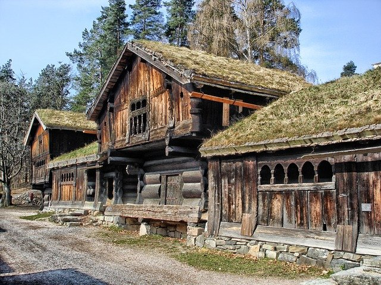

Norway
Norway or Norge in the offical written language of Norway is offically referred to as the Kingdom of Norway on the global stage. The estimated current population of Norway is 5,432,580. It is made of of the western and most northen portion of the Scandinavian Peninsula.
Norway is one of the world's largest producer of oil and natural gas outside of the Middle East. The Norwegian state has large ownership positions in key industrial sectors boasting large reserves of petroleum, natural gas, minerals and lumber.
Norway's government is considered a unitary constitutional monarchy with a Parliamentary system, the Head of State is the King of Norway, Harald the V but the Head of the Government is the Prime Minister, currently Erna Solberg.
Norway is home to eight World Heritage Sites some of those sites include Urnes Stave Church, Bryggen, the Rock Art of Alta, and Rjukan-Notodden Industrail Heritage Site. Urnes Stave Church is particularly interesting seeing that's made of wood and built in the 1132.
Norway is particularly famous for its fjords and beautiful mountains. Some popular cities to visit include Oslo, Bergen, Stavanger, and Trondheim. Though much of Norway's landscape is largely unspoiled and is a wonderful attraction for the outdoors type.